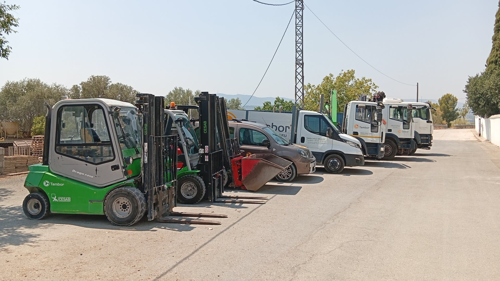

A Trans Català Rodes SL som una empresa familiar fundada l'any 2000 a Flix (Ribera d'Ebre). Des dels nostres inicis, fa més de 25 anys, hem mantingut ferms els valors que ens van vore nàixer: el tracte proper, la serietat en cada projecte i la vocació de donar solucions eficients i adaptades a les necessitats reals dels nostres clients. Al llarg d'aquests anys, a Trans Català Rodes SL hem sabut evolucionar paral·lelament a les exigències del mercat i de les normatives ambientals. Els nostres orígens estan estretament vinculats al transport de material de construcció i servei a la indústria, actualment també ens hem especialitzat de manera destacada en la gestió i transport de residus. Entenem la gestió de residus no només com un servei logístic, sinó com un compromís ferm amb el nostre entorn. Treballem rigorosament per garantir que la recollida, el transport i el posterior tractament de les restes d'obra, residus banals o voluminosos es realitzen d'acord amb la normativa vigent i els gestors autoritzats, promovent la sostenibilitat i el respecte pel medi ambient.

Cada dia, una curiositat, normativa o dada tècnica del món del transport i la grua
Solucions de transport i camió grua adaptades a cada feina
Oferim solucions per a la recollida i gestió de residus no perillosos i de construcció. Comptem amb contenidors de diferents cubicatges i maquinària especialitzada per un transport segur i eficient. Complim estrictament amb totes les normatives mediambientals vigents, per garantir un correcte tractament dels diferents residus. Ens comprometem a una gestió responsable, ràpida i personalitzada adaptada a qualsevol necessitat.
Som especialistes en el moviment i transport de mercaderies de diferents volums i pesos. Disposem de vehicles d'alta capacitat i equips homologats per assegurar la màxima protecció de la càrrega. Planifiquem cada ruta detalladament, gestionant els permisos i la logística necessària per a un servei eficient. Confia en la nostra experiència per traslladar la teva maquinària i materials pesats de forma ràpida i segura.
Proporcionem serveis de grua, elevació de càrregues i maniobres complexes. Equipats amb braç i cabrestants operats per personal amb gran experiència altament qualificat i amb certificat. Oferim solucions a mida per a projectes de construcció, instal·lacions industrials i treballs d'alta dificultat. Prioritzem la seguretat operacional i la precisió en cada moviment per garantir un resultat impecable.